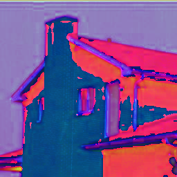
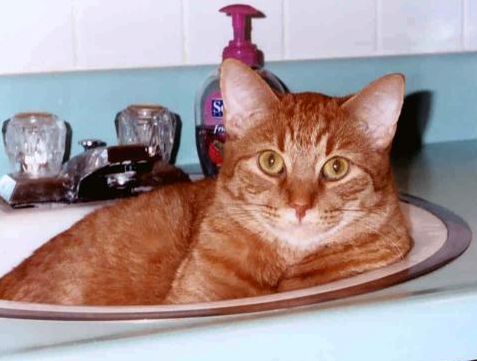
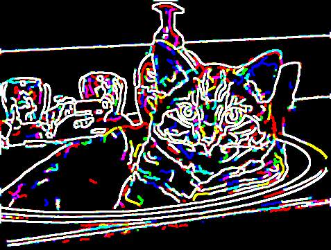

Welcome to the CVIP Toolbox from SIUE
The MATLAB toolbox for the exploration of computer vision and image processing

The CVIP Toolbox for MATLAB is a collection of computer vision and image processing functions developed at the Computer Vision and Image Processing Laboratory (CVIP Lab) at Southern Illinois University Edwardsville, under the continuing direction of Dr. Scott E Umbaugh. One of the primary purposes of the toolbox is to allow students, educators and researchers a simple, easy to use platform for the exploration of image processing techniques. Users can install the toolbox and use the functions as other built-in functions in the MATLAB environment.
Function Categories:
- Arithmetic and Logic
- Band
- Color
- Conversion of Image Files
- Edge/Line Detection
- Geometry
- Histogram
- Mapping
- Morphological
- Noise
- Compression
- Objective Fidelity
- Pattern Classification: Algorithm Testing
- Pattern Classification: Classification Algorithm
- Pattern Classification: Distance Similarity Metrics
- Pattern Classification: Feature Extraction
- Pattern Classification: Normalization Methods
- Segmentation
- Spatial Filters: Adaptive Filters
- Spatial Filters: Mean Filters
- Spatial Filters: Miscellaneous
- Spatial Filters: Order Filters
- Transform
- Transform Filters: Standard
- Transform Filters: Restoration